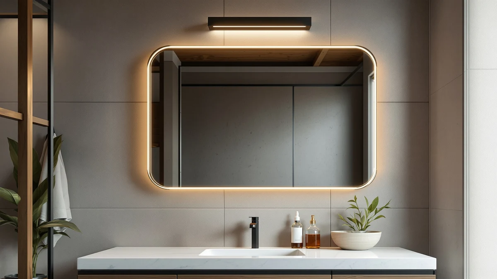

Quick Answer
The Keonjinn 24-by-30-inch LED is the best pick for most single-vanity bathrooms, with a tempered-glass panel, built-in LED lighting, and an aluminum frame for under $100. If you need to cover a double vanity, the larger 30-by-36-inch Keonjinn scales up the same design, and the Olyvren 20-by-28-inch is the better call if you're working with a small bathroom and a tight budget.
Our pick: Keonjinn 24" x 30" LED, $97.99 Check Price on Amazon
Things to Know Before You Buy
- Size to your vanity, not your wall. A bathroom mirror should sit a few inches narrower than the counter below it. A 24-to-30-inch-wide mirror suits most single sinks; move up to 36 inches or a double-mirror setup only for wider vanities.
- LED mirrors need power close by. Every lighted pick in this guide draws power through a cord or a hardwired connection, so confirm you have an outlet or existing wiring within reach before you buy.
- Tempered glass and aluminum is the standard build. All seven mirrors here use this combination because it resists warping and clouding in a humid bathroom better than a painted wood frame.
- Round and rectangular mirrors use wall space differently. A round mirror suits a pedestal sink or a single focal point, while a rectangular mirror makes better use of a wide vanity counter.
- Where you buy matters as much as what you buy. Amazon is the best store for bathroom mirrors for most shoppers because listings state exact dimensions upfront and a 30-day return window covers mirrors that arrive cracked or don't fit.
The best store for bathroom mirrors is the one that lets you compare dozens of sizes, styles, and price points side by side, then backs up the purchase with verified owner reviews and an easy return window, and for most shoppers that store is Amazon. We narrowed thousands of Amazon listings down to seven bathroom mirrors that actually match their product photos, ranging from a $97.99 LED pick to an oversized 30-by-36-inch statement mirror for bigger vanities.
Big-box retailers like Home Depot and Wayfair carry bathroom mirrors too, but their listings often bury the actual dimensions in a spec sheet you have to click through, and returning an oversized glass panel can mean scheduling a freight pickup instead of dropping off a prepaid box. Amazon's bathroom mirror category avoids both problems: listings state height and width up front, and a standard return window covers a mirror that arrives with a cracked panel or a missing bracket.
For most people, the Keonjinn 24-by-30-inch LED is the mirror to buy, combining a tempered glass panel, built-in lighting, and an aluminum frame for under $100. If your vanity runs wider, the 30-by-36-inch version from the same brand scales the design up, and if a round mirror suits your decor better, the JSneijder 30-inch round LED gives you that shape without giving up the lighting that makes the rectangular picks worth buying.
Why You Should Trust Us
Best Bathroom Mirrors is an independent review site that covers one category: the mirrors, medicine cabinets, and vanity lighting installed above a bathroom sink. We do not take payment from manufacturers for placement in this guide, and every product link here is a standard Amazon affiliate link that costs you nothing extra to use.
For this guide we treated Amazon as the best store for bathroom mirrors and worked through manufacturer specs, listing photos, and return policies for dozens of LED and framed mirrors before narrowing the field to the seven that represent the range of sizes, shapes, and prices shoppers are actually choosing between. We update prices and picks as the market shifts.
How We Picked
We started by confirming each mirror ships from a retailer that behaves like the best store for bathroom mirrors should: clear dimensions in the listing, a visible return window, and enough of a sales history to judge reliability rather than relying on a manufacturer's marketing copy.
From there we prioritized size options that cover both single and double vanities, a shape lineup that includes more than rectangles, and frame construction that survives daily bathroom humidity without warping or rusting. We also kept a budget lane open, because not everyone wants to spend $150 or more on a mirror, and the Olyvren 20-by-28-inch proves you can get a built-in LED mirror for under $100.
How We Compared
We compared each mirror on the specs that predict how it performs above a sink: overall height and width against common vanity sizes, whether the frame is tempered glass and aluminum or a less durable material, and how the listed price holds up against similarly sized competitors in this guide.
We also weighed the buying experience itself, since that's part of what makes a retailer the best store for bathroom mirrors in practice: whether the listing states dimensions clearly, how the price compares across brands at the same size, and whether a return option exists if the glass arrives damaged. Where a pick costs more for the same footprint as a competitor, we say so directly in its write-up instead of glossing over it.
Our Picks

Keonjinn 24" x 30" LED
What we like
- LED illumination built into the frame instead of a separate light fixture
- Tempered glass and an aluminum frame resist warping in a humid bathroom
- At $97.99, the least expensive LED mirror in this lineup
Flaws but not dealbreakers
- 24-by-30-inch size fits a single sink and looks undersized on a double vanity
- Smaller panel means less overall light spread across a wide wall than the larger Keonjinn
- No larger version of this exact style at this price
| Material | Tempered glass + aluminum |
| Size | 30"L x 24"W |
The Keonjinn 24-by-30-inch is the pick for most single-vanity bathrooms, and at $97.99 it costs less than every other LED mirror in this guide. The frame is built from tempered glass and aluminum, a combination that holds up to daily steam and splashing better than a painted wood or plastic frame, and the LED lighting is built directly into the mirror rather than bolted on as a separate fixture.
At 24 inches wide and 30 inches tall, it's sized for a single sink rather than a double vanity, so measure your wall before you buy if your bathroom has two sinks side by side. For a standalone vanity or a half bathroom, though, this is the size and price most shoppers land on, and stepping up to the 30-by-36-inch Keonjinn is the move if you need more glass.

Keonjinn 30 x 36 Inch
What we like
- Same tempered glass and aluminum construction as the smaller Keonjinn
- 36-by-30-inch size comfortably spans a double vanity or a wide single sink
- Built-in LED lighting scales up without changing the mirror's overall design
Flaws but not dealbreakers
- At $189.99, nearly double the price of the 24-by-30-inch Keonjinn
- Larger glass panel is heavier and needs solid anchoring into wall studs
- Oversized for a small or half bathroom
| Material | Tempered glass + aluminum |
| Size | 36"L x 30"W |
The 30-by-36-inch Keonjinn is the larger version of the pick above, built from the same tempered glass and aluminum frame with LED lighting integrated into the design. At $189.99 it costs nearly twice as much as the 24-by-30-inch model, and that difference buys additional glass rather than a new feature set.
If your bathroom has a double vanity or one long single-sink counter, the extra width and height mean the mirror actually covers the wall instead of leaving bare space on either side. Because of the size and weight, plan to anchor it into studs rather than hollow drywall, and skip it in favor of the smaller Keonjinn if your bathroom is on the compact side.

Olyvren 24"x32" LED Bathroom Mirror
What we like
- 32-inch height gives more coverage top to bottom than the 30-inch-tall Keonjinn at the same width
- Tempered glass and aluminum frame matches the durability of the other picks
- Built-in LED lighting at a price close to the entry-level pick
Flaws but not dealbreakers
- At $107.99, costs about $10 more than the Keonjinn 24x30 for the added height
- Still 24 inches wide, so it suits a single sink only
- Height may crowd a low vanity or a mirror mounted above a backsplash
| Material | Tempered glass + aluminum |
| Size | 24"L x 32"W |
The Olyvren 24-by-32-inch keeps the same 24-inch width as the Keonjinn entry pick but adds two inches of height, which matters if your vanity sits lower or your bathroom ceiling allows for a taller mirror. It's built from the same tempered glass and aluminum combination and includes the same built-in LED lighting that runs through this entire guide.
At $107.99 it's about $10 more than the Keonjinn 24x30, a reasonable premium if the extra height suits your space. If your bathroom has a backsplash or a lower ceiling that would crowd a 32-inch-tall mirror, the shorter Keonjinn is the safer measurement to work with instead.
Olyvren 20"x28" LED Bathroom Mirror
What we like
- Smallest dimensions in this guide at 20 by 28 inches, suited to tight walls
- Keeps the same tempered glass, aluminum frame, and built-in LED lighting as Olyvren's larger model
- At $99.99, ties the Keonjinn 24x30 as the least expensive way into an LED mirror here
Flaws but not dealbreakers
- 20-inch width is narrow for anything beyond a single, smaller sink
- Less overall glass area than every other pick in this guide
- Not a fit for a double vanity even as a temporary solution
| Material | Tempered glass + aluminum |
| Size | 20"L x 28"W |
At 20 by 28 inches, this is the smallest mirror in the lineup, built for a powder room or a compact single-sink bathroom where a larger panel would crowd the wall around it. It carries over the same tempered glass, aluminum frame, and built-in LED lighting as Olyvren's larger 24-by-32-inch model, scaled down to a smaller package.
The narrower frame means less glass to work with if you're getting ready in front of it, so if your bathroom has the wall space, the 24-by-32-inch Olyvren or the Keonjinn 24x30 give you more mirror for close to the same money. For a small bathroom with limited wall space, though, this is the cheapest way into an LED mirror in this guide.

SBAGNO 36''x28'' LED Bathroom Mirror
What we like
- 36-inch width is wider than every pick except the largest Keonjinn
- Tempered glass and aluminum frame construction matches the rest of the lineup
- Built-in LED lighting at a price below the larger Keonjinn despite similar glass area
Flaws but not dealbreakers
- At $159.99, costs more than both Olyvren sizes and the Keonjinn 24x30
- 28-inch height is shorter than the Olyvren 24x32, so it favors width over height
- Proportions suit a wide counter more than a standard single-sink cabinet
| Material | Tempered glass + aluminum |
| Size | 28"L x 36"W |
The SBAGNO flips the usual proportions in this guide: at 36 inches wide and 28 inches tall, it favors width over height, which fits a long, wide single-sink counter better than the taller, narrower picks here. It's built from the same tempered glass and aluminum frame, with LED lighting built into the design.
At $159.99 it sits in the middle of this lineup's price range, less than the largest Keonjinn but more than either Olyvren size. If your vanity is wide but your ceiling height limits how tall a mirror can hang, this is the pick that makes use of horizontal space instead of vertical.

STARLEAD 24"x32" LED Bathroom Mirror
What we like
- Matches the Olyvren 24x32's footprint for about $9 less
- Tempered glass and aluminum frame construction consistent with the rest of the lineup
- Built-in LED lighting at a price close to the Keonjinn entry pick
Flaws but not dealbreakers
- Newer brand with less of a track record on this site than Keonjinn or Olyvren
- Same 24-inch width limits it to a single sink, like the other 24-inch-wide picks
- Height may still crowd a lower vanity or shallow mirror niche
| Material | Tempered glass + aluminum |
| Size | 24"L x 32"W |
STARLEAD covers the same 24-by-32-inch footprint as the Olyvren pick above, at $98.99, about nine dollars less. It's built with the same tempered glass and aluminum combination and includes built-in LED lighting, so on paper it undercuts the Olyvren for an identical size.
The tradeoff is brand recognition. STARLEAD doesn't carry the same track record in this guide as Keonjinn or Olyvren, both of which show up multiple times here. If matching size and a lower price matter most to you, and you're comfortable buying from a newer brand, it's a reasonable way to save a few dollars over the Olyvren.

JSneijder 30 Inch Round LED
What we like
- Only round option in this guide, suited to pedestal sinks and softer decor styles
- 30-inch diameter gives a glass area comparable to the mid-size rectangular picks
- Tempered glass and aluminum frame construction consistent with the rest of the lineup
Flaws but not dealbreakers
- At $142.49, costs more than every rectangular pick except the largest Keonjinn and the SBAGNO
- Round shape leaves more exposed wall on either side above a standard rectangular vanity
- Not the right shape if you want a mirror that spans a double vanity edge to edge
| Material | Tempered glass + aluminum |
| Size | 30"L x 30"W |
Every other mirror in this guide is rectangular, and the JSneijder is the exception: a 30-inch round LED mirror built from the same tempered glass and aluminum frame as the rest of the lineup. A round shape suits a pedestal sink or a bathroom leaning toward a softer, less boxy look better than a rectangular panel does.
At $142.49 it costs more than the two Olyvren sizes and the STARLEAD, positioning it as a style choice as much as a budget one. A 30-inch circle covers less of a wide wall than a rectangular mirror of similar width, so if your vanity is wide and rectangular, one of the rectangular picks above will use the wall space more efficiently.
Quick Comparison
| Product | Material | Price | Rating | Best for | Get it |
|---|---|---|---|---|---|
| Keonjinn 24" x 30" LED | Tempered glass + aluminum | $97.99 | 4 | Most single-vanity bathrooms | View on Amazon → |
| Keonjinn 30 x 36 Inch | Tempered glass + aluminum | $189.99 | 4 | Double vanities and wide single sinks | View on Amazon → |
| Olyvren 24"x32" LED Bathroom Mirror | Tempered glass + aluminum | $107.99 | 4 | Vanities with room for a taller mirror | View on Amazon → |
| Olyvren 20"x28" LED Bathroom Mirror | Tempered glass + aluminum | $99.99 | 4 | Small bathrooms and powder rooms | View on Amazon → |
| SBAGNO 36''x28'' LED Bathroom Mirror | Tempered glass + aluminum | $159.99 | 4 | Wide single-sink vanities | View on Amazon → |
| STARLEAD 24"x32" LED Bathroom Mirror | Tempered glass + aluminum | $98.99 | 4 | Matching the Olyvren size for less | View on Amazon → |
| JSneijder 30 Inch Round LED | Tempered glass + aluminum | $142.49 | 4 | Pedestal sinks and round-mirror decor | View on Amazon → |